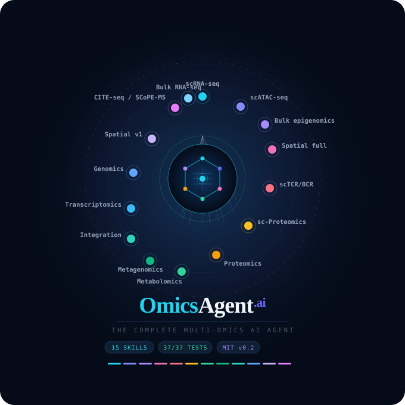

15 specialist skills — scRNA-seq, scATAC, Visium, MERFISH, CosMx, TCR/BCR, SCoPE-MS and more. Local-first. Reproducible. Built on the Claude API.

Each skill encodes domain-expert decisions — correct thresholds, tool versions, normalization methods.
Python 3.10+ required
git clone https://github.com/madhubioinformatics/OmicsAgent cd OmicsAgent pip install -r requirements.txt
Get your key at console.anthropic.com
export ANTHROPIC_API_KEY="sk-ant-..."
All 15 skills, ~80 seconds
python3 omics_agent.py --demo
Describe your analysis in plain English
python3 omics_agent.py --chat
You: Cluster my PBMC scRNA-seq data
and find exhausted T cellsInstall OmicsAgent, configure your API key, and run your first skill.
Run all 15 skills on realistic PBMC data (Healthy vs Sepsis).
QC, normalization, UMAP, Leiden clustering, and PBMC marker annotation.
TF-IDF+LSI, ChromVAR TF deviation scores, differential accessibility.
Visium, MERFISH, CosMx, Stereo-seq — SVGs, RCTD, CellChat.
Clonotype expansion, V-gene usage, CDR3 diversity, BCR SHM.
MOFA+ latent factors, DIABLO classification, cross-omics correlations.
Write SKILL.md, run.py pipeline, register keywords, submit PR.
SLURM, AWS, GCP, Azure, Docker — run at any scale.
| Feature | OmicsAgent.ai | ClawBio | General LLM | Galaxy |
|---|---|---|---|---|
| scRNA-seq | ✓ | ✓ | ~ | ✓ |
| scATAC-seq + ChromVAR | ✓ | ✗ | ✗ | ~ |
| Spatial (4 platforms) | ✓ | ✗ | ✗ | ✗ |
| scTCR/BCR repertoire | ✓ | ✗ | ✗ | ~ |
| sc-Proteomics (SCoPE-MS) | ✓ | ✗ | ✗ | ✗ |
| Multi-omics integration | ✓ | ✗ | ✗ | ✗ |
| Reproducibility bundle (SHA-256) | ✓ | ✓ | ✗ | ✗ |
| Local-first (no data upload) | ✓ | ✓ | ✗ | ✗ |
15 skills · 50+ figures · PBMC demo included · MIT licensed · Free forever